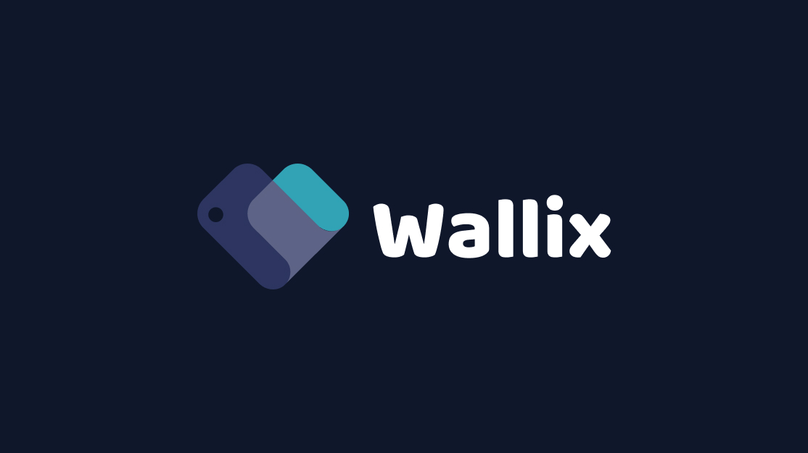
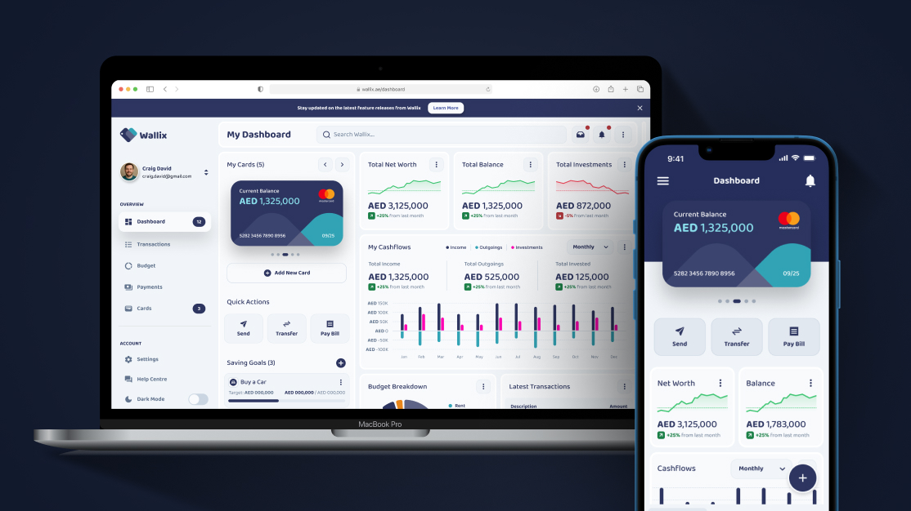
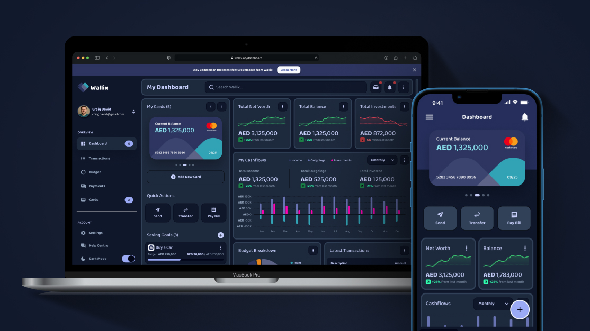
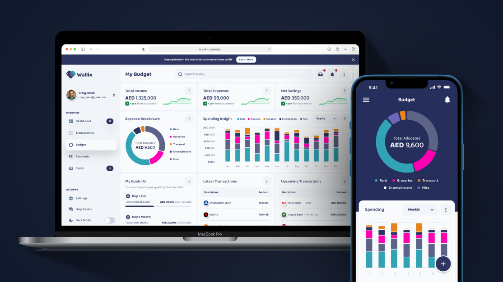
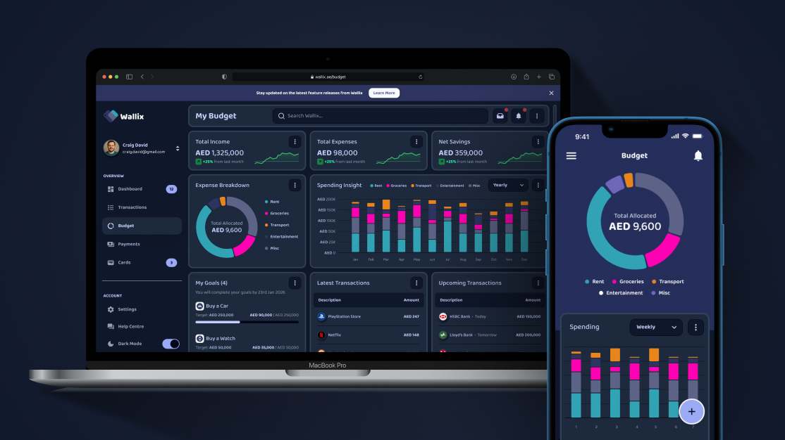
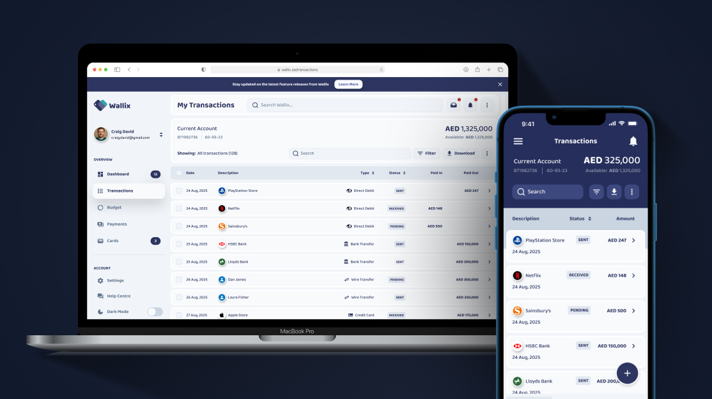
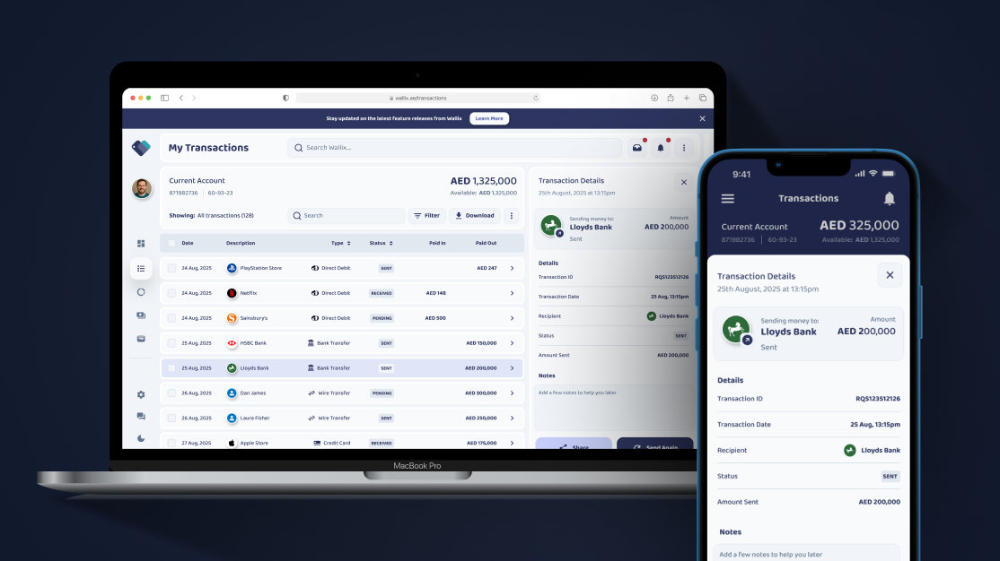
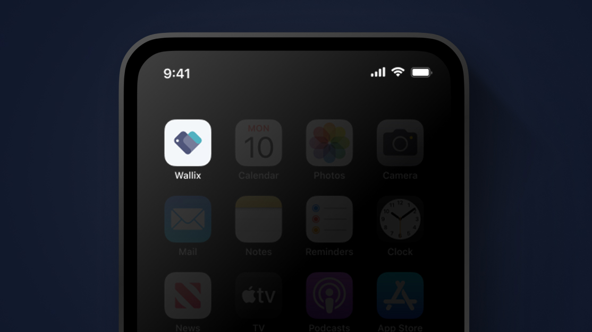

Investors and portfolio managers were drowning in data but starving for insight. The tools available to them were either built for institutional trading desks — complex, expensive, and inaccessible — or consumer-grade dashboards that oversimplified to the point of uselessness. Wallix saw the gap and asked us to close it.
The brief was to design and build a sophisticated financial analytics platform that felt genuinely powerful without requiring a Bloomberg terminal licence to understand. Real-time data, customisable dashboards, and actionable reporting — all in an interface that a smart individual investor or boutique fund manager could navigate with confidence.
Discovery revealed that the core problem wasn't a lack of data — it was a lack of meaningful hierarchy. Users received everything at equal weight, so nothing felt important. Our define phase established a clear product principle: surface what matters now, make everything else accessible on demand.
We mapped the key decision moments in a portfolio manager's day and designed the information architecture around them. The dashboard was built from the user's mental model outward — not from the data schema inward. This meant designing for the question "how is my portfolio doing?" before designing for "how do we display a P&L chart."
The design phase explored multiple approaches to data visualisation — balancing density with readability, and building a charting language that was consistent across all views. Every interactive element was prototyped and tested to ensure that customisation felt effortless rather than technical.
A full-stack financial analytics platform — covering real-time portfolio tracking, multi-asset class performance dashboards, customisable data views, automated reporting, and integration with financial data APIs. We delivered the product across web and tablet, with a design system built to scale as the platform grows.








We partnered with Wallix to design and develop a sophisticated financial analytics platform that empowers users with real-time portfolio tracking, advanced data visualisation, and actionable insights. Our scope encompassed UX/UI design, dashboard architecture, responsive web development, and integration with financial data APIs.
The platform launched to a cohort of early users from boutique fund management and high-net-worth individual investors, with retention and daily active usage well above projections at the one-month mark. The customisable dashboard module became the standout feature in user feedback, cited consistently as the reason users stayed.
A personal finance platform helping users track, plan, and eliminate debt — designed and built end-to-end under the Venture Pro tier in 12 weeks.
View Project